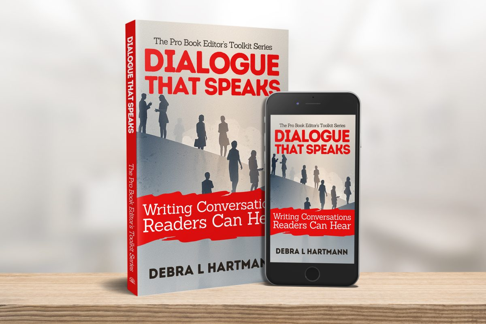
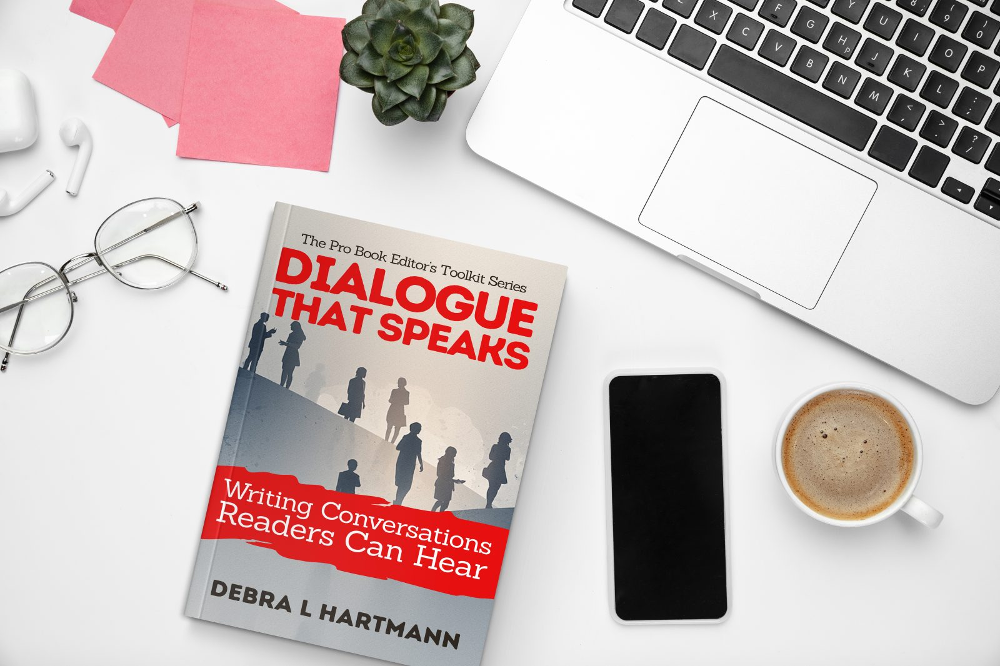

Toolkit Series
Book 1

Write dialogue worth eavesdropping on.
Your plot is tight. Your characters are compelling. But every time they open their mouths, something falls flat.
Maybe your dialogue sounds stilted, or all your characters speak with suspiciously similar voices. Maybe you've been told your conversations are "on the nose," but no one's explained what that means or how to fix it. Maybe the mechanics trip you up: dialogue tags, action beats, punctuation that never quite looks right.
You're not alone. Dialogue is one of the hardest elements of fiction writing to master, and one of the most important. It's where readers decide whether your characters feel like real people or just constructs on a page.
Dialogue That Speaks gives you the same diagnostic tools professional editors use to identify and fix dialogue that isn't working. Drawing on more than two decades of experience as a developmental editor, line editor, and proofreader, Debra L. Hartmann breaks down the craft of compelling dialogue into learnable, immediately applicable techniques.
You'll discover:
- Techniques for creating authentic subtext
- How to give each character a distinctive voice
- The truth about "said" (hint: it's not dead)
- When to use action beats and body language clues
- How to weave exposition into dialogue without "As you know, Bob…"
- Techniques for pacing dialogue scenes
- Strategies for handling group conversations without losing readers
Each chapter includes examples, practical exercises, and revision challenges you can apply to your work-in-progress today.
Whether you're drafting your first novel or polishing your tenth, Dialogue That Speaks will transform how you write, revise, and hear the conversations on your pages.
Available in eBook & Paperback
Get Your Free Printable Toolkit
Sign up and we'll send you the free printable download for Dialogue That Speaks, plus periodic emails sharing more craft tips, revision insights, and the occasional dose of writing inspiration.
That's it. No daily sales pitches, no inbox clutter. We respect your time (and your right to unsubscribe).
By signing up you agree to receive the toolkit and occasional craft-tip emails from The Pro Book Editor. Unsubscribe any time. Prefer email? Reach us directly at theprobookeditor@outlook.com.
